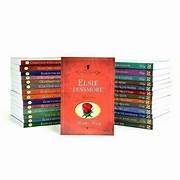
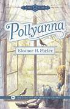
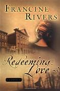
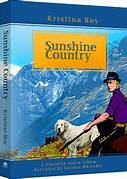

Mina Fem Böcker
-
Bok 1: Bible
-

Bok 2: Elsie Dinsmore
-

Bok 3: Pollyanna
-

Bok 4: Redeeming Love
-

Bok 5: Sunshine Country
Fördelar
- Intressanta och unika karaktärer
- Spännande handling som fängslar
- Detaljerat och levande språk
- Oförutsägbara vändningar
- Lättläst men djupt innehåll
Nackdelar
- Ibland för långa beskrivningar
- Långsam inledning i vissa böcker
- Vissa karaktärer saknar utveckling
- Några böcker kan vara lite förutsägbara
- Vissa teman kan kännas repetitiva